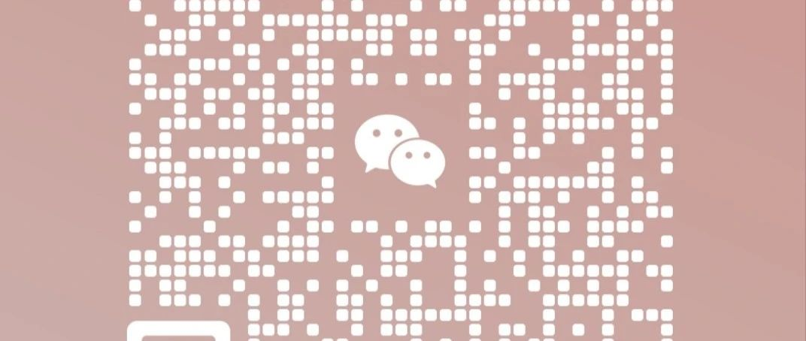

《化繭成蝶13》《跨性別公益》
思前想後，自己是跨性別一員
想為這個群體做些什麼事情，
但是自己能力有限（心有餘而力不足）
不知道《跨性別公益》自己能不能做好，這條路的“辛酸”“艱苦”“困難”“磨難”只有“經歷”過的人懂……
各位朋友們
您們好！
很高興認識您們
本人 宋家樂
于2024年1月1日后準備做
跨性別公益活動方面的事情
線下見面討論 探討活動
分享本人跨性別經驗，過程，
以及，焦慮，抑鬱，工作，生活，
方面的事情……
線上交流分享活動，
如何走出焦慮，抑鬱，
如何接納自己，
如何豐富自己……
有想進群了解詳情
的朋友可以聯繫我！
有活動我會在群裡發佈，
感謝各位朋友的支持！
非常的感謝各位朋友，謝謝您們
有你們的支持和鼓勵，
是我前進的動力……
1/人生的意義是什麼？
2/人生怎樣渡過，才會更有意義？
3/如果讓您從新選擇您會選擇怎樣渡過？
4/如何看待ta人的眼光和想法！
5/如何接納自己！